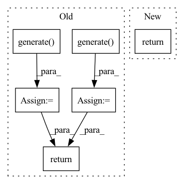

Pattern ID :10120

Before Change
def generate(self):
Generates an attention map.
attention_map_GCAM = self.model_GCAM.generate()
attention_map_GBP = self.model_GBP.generate()[""]
for layer_name in attention_map_GCAM.keys():
if attention_map_GBP.shape == attention_map_GCAM[layer_name].shape:
attention_map_GCAM[layer_name] = np.multiply(attention_map_GCAM[layer_name], attention_map_GBP)
else:
attention_map_GCAM_tmp = gcam_utils.interpolate(attention_map_GCAM[layer_name], attention_map_GBP.shape[2:])
attention_map_GCAM[layer_name] = np.multiply(attention_map_GCAM_tmp, attention_map_GBP)
return attention_map_GCAM
After Change
attention_map_GCAM_tmp = gcam_utils.interpolate(self.attention_map_GCAM[layer_name], self.attention_map_GBP.shape[2:])
self.attention_map_GCAM[layer_name] = np.multiply(attention_map_GCAM_tmp, self.attention_map_GBP)
self.attention_map_GCAM[layer_name] = self._normalize_per_channel(self.attention_map_GCAM[layer_name])
return self.attention_map_GCAM
def _generate_gbp(self, batch, label):
output = self.model_GBP.forward(batch)
In pattern: SUPERPATTERN
Frequency: 3
Non-data size: 6
Instances
Fragment ID: 35889847
Project Name: karol-g/gcam
Commit Name: 945478234d00569bd5f60e2972279029b81b233d
Time: 2020-06-21
Author: KarolGotkowski@gmx.de
File Name: gcam/backends/guided_grad_cam.py
M Class Name: GuidedGradCam
N Class Name: GuidedGradCam
M Method Name: generate(1)
N Method Name: generate(1)
M Parent Class:
N Parent Class:
M File Name: gcam/backends/guided_grad_cam.py
N File Name: gcam/backends/guided_grad_cam.py
M Start Line: 31
M End Line: 39
N Start Line: 34
N End Line: 41
'>
Before Change
data = template.process_batch(data)
data = data.to("cuda:{}".format(self.config.environment.local_rank))
self.verbalizer_generator.register_buffer(data)
label_words_list = self.verbalizer_generator.generate() // List[List[str]]
best_label_words = self._get_best_label_words(label_words_list, template, verbalizer)
return best_label_words
def run(self):
"""
After Change
if self.config.environment.num_gpus > 0:
data = data.to("cuda:{}".format(self.config.environment.local_rank))
verbalizer_generator.register_buffer(data)
label_words_list = verbalizer_generator.generate() // List[List[str]]
return label_words_list
def run(self):
"""
'>
Fragment ID: 35889845
Project Name: thunlp/openprompt
Commit Name: 1edf69419f3d3617e01152b95a5fbcc216887c92
Time: 2021-10-22
Author: yl-chen17@mails.tsinghua.edu.cn
File Name: openprompt/lm_bff_trainer.py
M Class Name: LMBFFClassificationRunner
N Class Name: LMBFFClassificationRunner
M Method Name: _auto_v(3)
N Method Name: _auto_v(5)
M Parent Class:
N Parent Class:
M File Name: openprompt/lm_bff_trainer.py
N File Name: openprompt/lm_bff_trainer.py
M Start Line: 77
M End Line: 88
N Start Line: 92
N End Line: 104
'>
Before Change
for data in dataloader:
data = data.to("cuda:{}".format(self.config.environment.local_rank))
self.template_generator.register_buffer(data.input_ids, data.attention_mask, data.label)
template_texts = self.template_generator.generate() // [["text_a", "<mask>", ...]]
best_template_text = self._get_best_template_text(template_texts, verbalizer)
return best_template_text
def _auto_v(self, dataset, template, verbalizer, batch_size=32):
logger.info("performing auto-v...")
After Change
if self.config.environment.num_gpus > 0:
data = data.to("cuda:{}".format(self.config.environment.local_rank))
template_generator.register_buffer(data.input_ids, data.attention_mask, data.label)
template_texts = template_generator.generate() // [["text_a", "<mask>", ...]]
return template_texts
def _auto_v(self, dataset, template):
logger.info("performing auto-v...")
'>
Fragment ID: 35889850
Project Name: thunlp/openprompt
Commit Name: 1edf69419f3d3617e01152b95a5fbcc216887c92
Time: 2021-10-22
Author: yl-chen17@mails.tsinghua.edu.cn
File Name: openprompt/lm_bff_trainer.py
M Class Name: LMBFFClassificationRunner
N Class Name: LMBFFClassificationRunner
M Method Name: _auto_t(3)
N Method Name: _auto_t(4)
M Parent Class:
N Parent Class:
M File Name: openprompt/lm_bff_trainer.py
N File Name: openprompt/lm_bff_trainer.py
M Start Line: 65
M End Line: 75
N Start Line: 78
N End Line: 88